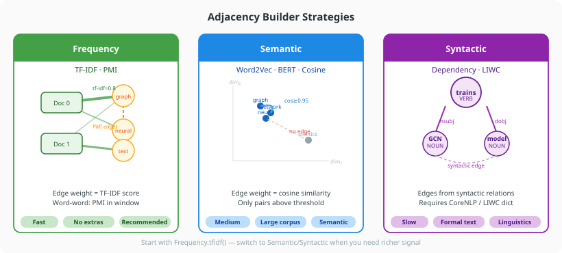

Choosing a Builder¶
Text4GCN provides three families of adjacency builders. This guide helps you choose the right one for your use case.

Quick comparison¶
| Builder | Method | Speed | Word–word edges | Requires |
|---|---|---|---|---|
Frequency |
tfidf() |
Fast | Positive PMI over a sliding window | Nothing extra |
Semantic |
word2vec() |
Medium | Adjacent words with similar Word2Vec vectors (trained on the corpus) | Training time |
Semantic |
bert() |
Slow | Adjacent words with similar BERT vectors | text4gcn[bert]; downloads bert-base-uncased on first use |
Semantic |
cosine_similarity() |
Medium | Words with similar WordNet definitions (English only) | NLTK WordNet (TextPipeline downloads it) |
Syntactic |
dependency_parsing() |
Slow | Words linked by a dependency relation | text4gcn[syntactic] + CoreNLP jars |
Syntactic |
linguistic_inquiry() |
Fast | Adjacent words sharing a LIWC category | LIWC dictionary |
Every builder also writes the same TF-IDF document–word edges.
Frequency — TF-IDF (recommended start)¶
The TF-IDF builder is the default and the best starting point. It requires no external tools, runs quickly, and gives competitive results on standard benchmarks.
from text4gcn.builder import Frequency
stats = Frequency(dataset_name="R8", dataset_path="data/").tfidf(window_size=20)
print(stats) # GraphBuildStats: nodes, edges(nnz), density, file size
Use when: - You are running your first experiment - Compute time is limited - The corpus uses standard vocabulary
Tune:
- window_size — larger windows capture longer-range co-occurrence but increase noise. Start at 20; try 10 or 30 for short/long texts.
Semantic — Word2Vec¶
Word2Vec trains embeddings on your corpus from scratch. Two adjacent non-stop-word words in a document are connected when the cosine similarity of their embeddings is at least threshold and their PMI is positive; the edge weight is the pair count divided by the largest pair count. Embeddings need a corpus large enough to train them.
from text4gcn.builder import Semantic
Semantic(dataset_name="R8", dataset_path="data/").word2vec(
training_algorithm=1, # 1 = skip-gram, 0 = CBOW
embedding_dimension=300,
num_epochs=20,
threshold=0.7,
)
Use when: - You have a large corpus (≥ 10k documents) - Words have domain-specific meaning not captured by PMI - You want embeddings trained on your own data
Tune:
- training_algorithm — skip-gram (1, used in the DCAI 2022 paper) is better on rare words; CBOW (0) is faster
- seed / workers — with the default workers=1 the graph is reproducible for a given seed; more workers train faster but vary between runs
- threshold — higher values create sparser graphs. On 20 Newsgroups (4 categories, 20 epochs) 0.95 kept 79 word–word edges, 0.7 kept 1,610 and 0.5 kept 11,127, all with the same accuracy; the default is 0.7
Semantic — BERT¶
Like Word2Vec RWF, but each vocabulary word is embedded with a pre-trained BERT model (bert-base-uncased, the [CLS] vector of the word encoded on its own, out of sentence context) instead of a model trained on the corpus. Adjacent words in a document are linked when their cosine similarity is at least threshold and their PMI is positive.
from text4gcn.builder import Semantic
Semantic(dataset_name="R8", dataset_path="data/").bert(threshold=0.95)
Requirements
bert() needs pip install "text4gcn[bert]" and always uses bert-base-uncased. Train on its graph with GNN(..., builder=Builder.Bert).
Use when: - The corpus is too small to train useful Word2Vec embeddings
Semantic — Cosine Similarity¶
Connects words whose WordNet definitions are similar: TextPipeline saves a TF-IDF vector of each word's WordNet glosses, and the builder links two words when the cosine similarity of those vectors exceeds the threshold. Words that WordNet does not know get no word–word edges.
English only
WordNet definitions are in English. On other languages almost no word has a definition, so the graph keeps only the document–word edges.
from text4gcn.builder import Semantic
Semantic(dataset_name="R8", dataset_path="data/").cosine_similarity(threshold=0.90)
Use when: - You want a semantic measure from a lexical resource, without training Word2Vec - The corpus is in English
Syntactic — Dependency Parsing¶
Edges between syntactically related words (subject-verb, adjective-noun, etc.) using Stanford CoreNLP. Each dependency relation (except ROOT) between two non-stop-word words counts as a pair; like the other RWF builders, a pair needs positive PMI, and its weight is its pair count divided by the largest pair count.
from text4gcn.builder import Syntactic
Syntactic(dataset_name="R8", dataset_path="data/").dependency_parsing(
core_nlp_path="/opt/stanford-corenlp",
language="english",
)
Experimental
Needs pip install "text4gcn[syntactic]" and a local Stanford CoreNLP installation (Java jars), which CI does not run. CoreNLP always parses English; language selects the NLTK stop-word list whose words get no edges.
Use when: - Formal text where grammatical relations carry classification signal - Linguistic analysis is the goal
Syntactic — LIWC¶
Connects adjacent words that share at least one LIWC (Linguistic Inquiry and Word Count) psycholinguistic category (e.g. "positive emotion", "cognitive process"). Like the other RWF builders, a pair needs positive PMI, and its weight is its pair count divided by the largest pair count.
from text4gcn.builder import Syntactic
Syntactic(dataset_name="R8", dataset_path="data/").linguistic_inquiry(
liwc_path="data/LIWC2015.dic",
)
Use when: - Sentiment, affect, or psychological framing is relevant to the classification task - You already have a LIWC dictionary licence
Mixing builders¶
Each builder writes a separate adjacency file. You can build multiple adjacency matrices and train separate GNN models to compare:
from text4gcn.builder import Frequency, Semantic
from text4gcn import GNN, Builder
dataset_name = "R8"
dataset_path = "data/"
Frequency(dataset_name=dataset_name, dataset_path=dataset_path).tfidf()
Semantic(dataset_name=dataset_name, dataset_path=dataset_path).word2vec(
training_algorithm=1, embedding_dimension=300, num_epochs=20
)
result_tfidf = GNN(dataset_name=dataset_name, dataset_path=dataset_path, builder=Builder.Tfidf).fit()
result_w2v = GNN(dataset_name=dataset_name, dataset_path=dataset_path, builder=Builder.Word2Vec).fit()
print(f"TF-IDF: {result_tfidf.test_accuracy:.4f}")
print(f"Word2Vec: {result_w2v.test_accuracy:.4f}")
Builder ↔ GNN.builder enum mapping¶
When calling GNN, pass the builder that matches the adjacency file you built:
from text4gcn import GNN, Builder
GNN(..., builder=Builder.Tfidf) # reads ind.frequency.tfidf.R8.adj
GNN(..., builder=Builder.Word2Vec) # reads ind.embedding.word2vec.R8.adj
GNN(..., builder=Builder.Bert) # reads ind.embedding.bert.R8.adj
GNN(..., builder=Builder.CosineSimilarity) # reads ind.cosine.similarity.R8.adj
GNN(..., builder=Builder.DependencyParsing) # reads ind.dependency.parsing.R8.adj
GNN(..., builder=Builder.Liwc) # reads ind.liwc.R8.adj